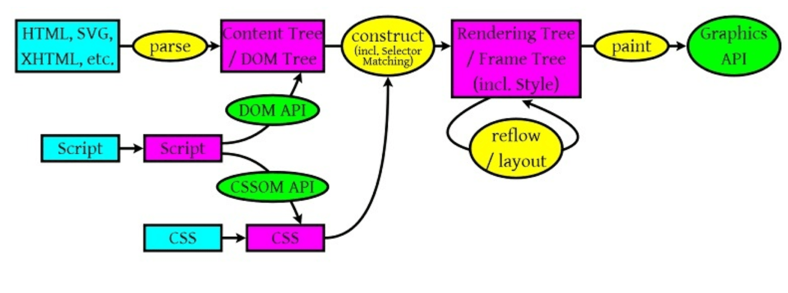

- 测试-基本概念
- css选择器
- 块状/内联元素
- 盒模型
- 文档流
- 浮动/清除浮动
- 绝对/相对/固定定位
- css hack
- OOCSS
- 响应式布局
- 测试-常用样式
- width
- height
- line-height
- padding
- margin
- float
- position
- z-index
- overflow
- display
- color
- background
- font-size
- border
- opacity
- border-radius
- box-shadow
- transform
- transition
- animate
- word-break
你已经会了{{s.qnPc}}%的CSS
从 浏览器渲染 到 回流&重绘

浏览器渲染
- *浏览器解析html生成DOM tree，解析css生成rule tree，解析js通过**api操作前两者
- *通过DOM Tree和Rule Tree来构造Rendering Tree
- *计算每个Element的位置，调用操作系统 Native GUI 的 API 绘制，这又叫
layout和
reflow
REPAINT & REFLOW
- *repaint——屏幕的一部分要重画，比如某个 CSS
的背景色变了。但是元素的几何尺寸没有变。
- *reflow——意味着元件的几何尺寸变了，我们需要重新验证并计算
Render Tree（HTML 使用的是 flow based layout，流式布局）
所以，提升效率要尽量减少reflow
对于css来说
- 1.动画元素尽量脱离文档流（后面会提到）
- 2.动画只涉及尽量小范围的尺寸改变
- 3.避免table布局
src和href这两个属性有什么不同？
- *src用于替换当前元素，href用于在当前文档和引用资源之间确立联系。
- *src用于：img,js,frame，浏览器会暂停其他资源的下载和处理，直到将该资源加载、编译、执行完毕。
- *href用于：css,a，浏览器并行下载资源并且不会停止对当前文档的处理。
CSS为何放到页头，JS放到页尾？
- 浏览器解析html生成dom树，是从上到下一行行进行的。
- src和href这两个属性有什么不同
下面正式开讲CSS-层叠样式表